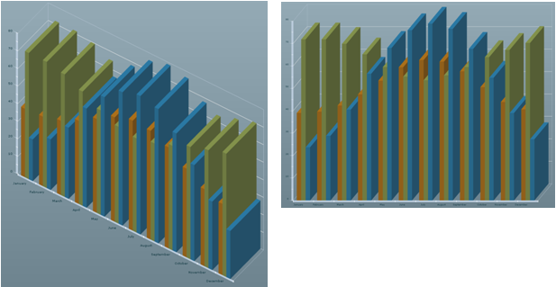

All 3D charts support properties that allow you to configure
the way the 3D view is displayed.
The following properties apply to all 3D charts:
-
A direct light that casts parallel rays.
This light is located by spherical coordinates in the projected space.
The default lightLatitude and lightLongitude values are equal to zero, which means
that the light is located at the eye.
An ambient light that illuminates the
3D objects independently of the rendered faces. Changing the intensity
prevents some parts of the chart from being too dark.
The following properties apply only to Cartesian charts:
The
projectionType property allows you choose how 2D values are projected
in the 3D space. It can be either orthographic or oblique projection.
The oblique projection preserves the orthogonality of the horizontal
and vertical axes. The following figure shows the same chart rendered
in orthographic (first chart) and oblique (second chart) projections:
